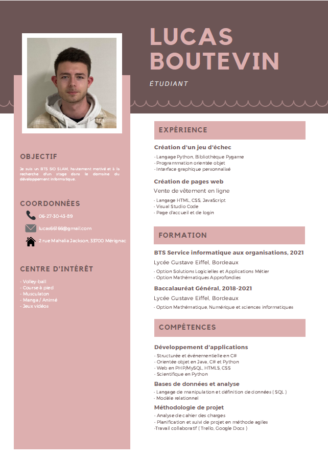
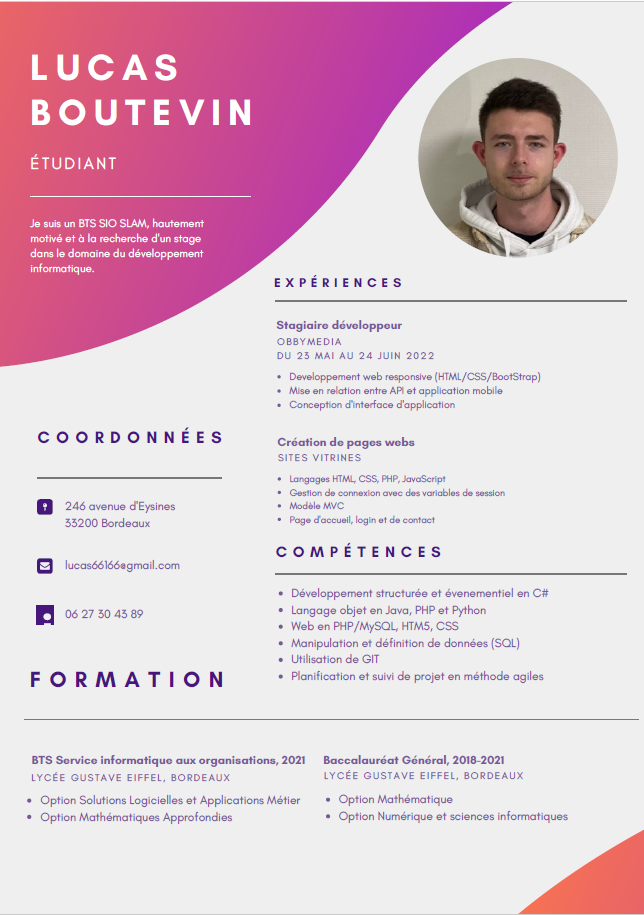
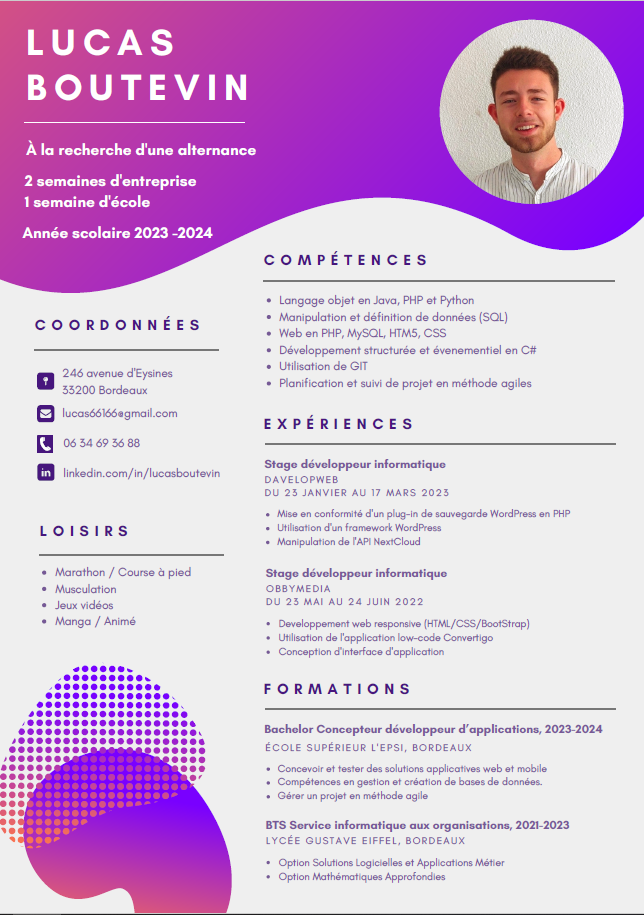

Gérer son identité professionnelle
Au cours de ces deux années, mon CV de base inexistant, a été créer et amélioré. Tout d'abord, en première années j'ai du trouver un stage. N'ayant pas de CV, j'ai dû en faire sa création. Dans cet objectif nos professeur ont organiser deux session de 4h de création de CV. Voici mon premier CV.

A la suite de ce premier stage, j'ai du en trouver un deuxième, puis ajourd'hui je suis en recherche d'alternance. Dans ces objectifs mes CV se sont améliorer.


Les sites de recrutement en ligne sont très populaires de nos jours. J'ai également créé mon CV en ligne sur Linkedin et je le mets à jour dès que possible. Toutes ces expériences dans le monde du travail m'ont appris qu'il faut toujours mettre nos CV à jour, car on ne sait jamais quand on pourrait être contacté, et cela améliore nos chances de trouver ce que l'on recherche.